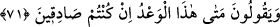
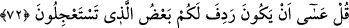
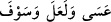

Üzülme, zira dert ortağın benim
Her türlü kötülüklerden seni koruyan benim
Ağyar senden yüz çevirecek olsa
Bu dünyada da âhirette de dostun benim
71. Onlar: “Eğer doğru sözlü iseniz (söyleyin bakalım) bu tehdit ne zaman
gerçekleşecek?” derler.
“Onlar:” kâfirler “Eğer” onu getirme haberinizde “doğru sözlü iseniz (söyleyin
bakalım) bu tehdit” vâdedilen âcil azâb “ne zaman gerçekleşecek?” nerededir ve ne
zaman olacaktır? “derler.”
“doğru sözlü iseniz” ifâdesinin çoğul olması, azâbı haber verme konusunda
mü’minlerin ortak olması îtibarıyladır.
72. De ki: “Çabucak gelmesini istediğiniz şeyin (azâbın) bir kısmı herhalde
yakında başınıza gelecektir.”
“De ki: “Çabucak gelmesini istediğiniz şeyin” azâbın “bir kısmı herhalde yakında
başınıza gelecektir.” size ulaşacaktır. O size binekte terkideki kişinin kendisini terkiye
alana yakınlığı kadar yakın olmuştur. Yani, belki Allah’ın hükmü ile size yetişir ve
arkanızdan geliverir.
İşte Bedir gününün azâbı onlara ulaşmıştır. Onların azâblarının diğerleri ise yeniden
diriltilme gününe saklanmıştır.
Denilmiştir ki: Ölüm, kıyametin bir kısmıdır ve ondan bir parçadır. Haberde şöyle
buyrulmuştur: “Kim ölürse, kıyâmeti kopmuştur.”[71] Çünkü, ölüm zamanı dünya
zamanlarının sonu ve âhiret zamanlarının ilkidir. Dünya zamanları birbirine bitişik
olduğu gibi ölüm zamânının kıyamet zamanına bitişik olması bakımından kıyâmetten
önce ölen kimsenin kıyameti kopmuş demektir.
“
(herhalde, belki, -ecek/-acak)” edatları, hükümdarların söz ve
vaadlerinde kesinlik ifâde eder. Onların bu ifâdeleri kullanmaları, vakar göstermek ve
kendileri gibi kimselerin remzinin/işâretinin başkalarının açık ifâdeleri (tasrih) yerinde
olduğunu hissettirmek içindir. İşte Allah’ın vaad ve vaîdi de bu uslûba göre gelmiştir.